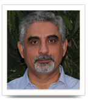
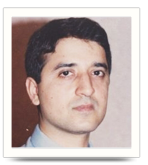
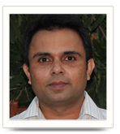
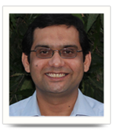

TEACHERS

- Principal
- PhD Computer Engineering, Iowa State University, USA, 1988
- MS Computer Engineering, Iowa State University, USA 1985
- B.Sc Electrical Engineering, UET Lahore, 1981
- Operating Systems, Data Structures, Programming Languages
- Email: principal@pucit.edu.pk

- Assistant Professor
- Doctorate Of Engineering (Ph.D.)University of Freiburg, Germany
- M.Sc., Computer Science (LUMS)Pakistan
- B.Sc, Computer Science,PU
- Programming Languages and Compilers, Protocols and Algorithms for Wireless and Wired Networks
- Email: faisal.aslam@gmail.com

- Assistant Professor
- PhD Computer Science, University of Innsbruck, Austria, 2008
- M.Sc Computer Science, PU, 2001 (Gold Medal)
- Computer Networks, Distributed and Parallel Systems, Data
- Structures, Automata Theory
- Email: murtaza@pucit.edu.pk

- Assistant Professor
- PhD Electrical Engineering and IT, Vienna University of Technology Austria, 2008
- MS Computer Science, LUMS Lahore, 2004
- B.Sc Civil Engineering, UET Taxila, 1998
- Computer Networks, Topics in Internet Research, Optical Communications, Performance Modeling
Email: S.sarwar@pucit.edu.pk